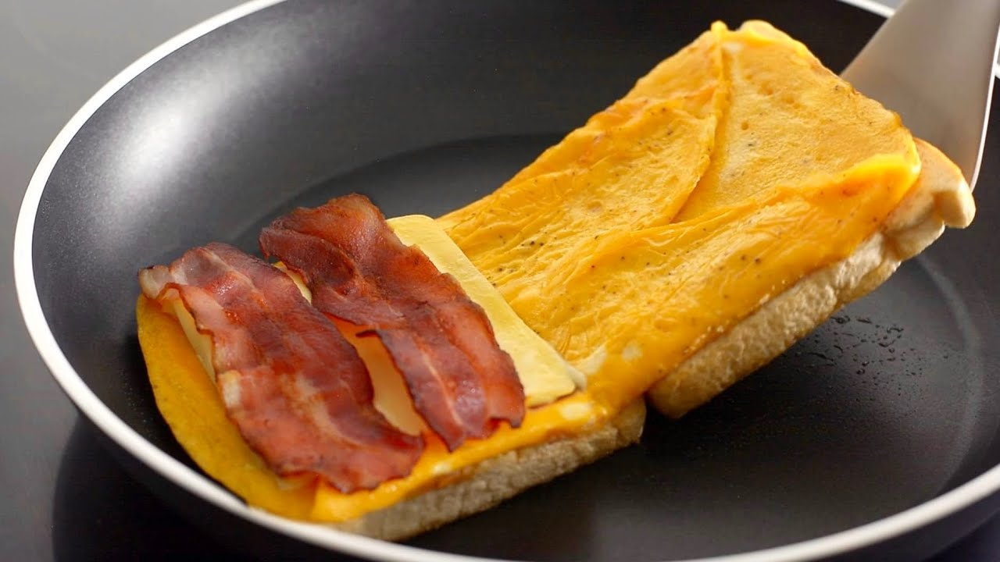

İşte bu heyecanlanacak bir tarif. Bu türünün tek örnegi, citir citir
tek tavada yumurtali tost, bu benim en sevdigim kahvalti sandvici!
Bu tost gercekten yapilabilecek en iyi tosttur!!
Tarif: Onurcan Akkoc

Yumurtali Tava Tostu Malzemeleri:
2 Adet Tost Ekmegi
2 Adet Yumurta
1 Kasik Tereyagi
2 Dilim Salam
1 Dilim Kasar
Tuz & Karabiber
Yumurtali Tava Tostu Tarifi:
Yumurtalar bir kapta homojen olacak sekilde cirpilir, tuz ve karabiber
eklenir.
Tavaya tereyagi eklenir ve erimesi beklenir.
Cirpilan yumurta tavaya konulur ve tost ekmekleri uzerine eklenir.
Yumurta pistikten sonra ekmekler alt yuzeye gelecek sekilde tavada tam
terse cevrilir.